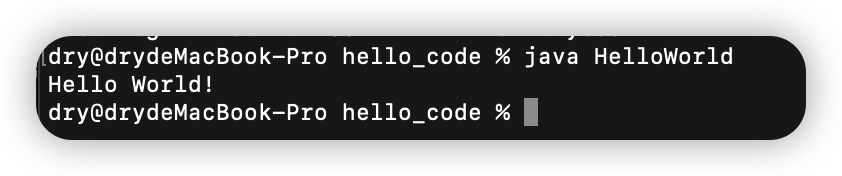
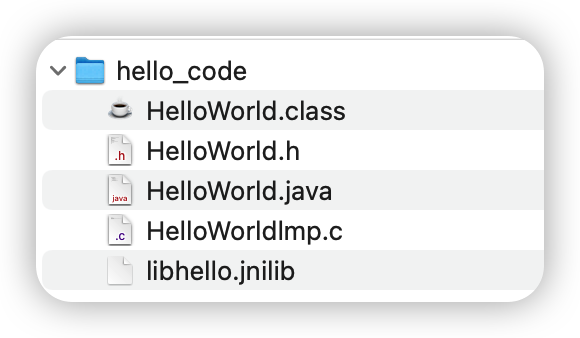

熟悉JNI机制-Java调用C/C++简单实现(Mac M1)
编写Java调C++程序
⬇️编写java代码，声明native方法
创建HelloWorld.java（在一个新的文件夹下进行以下操作）
关键字native 来表明这个方法使用java以外的语言实现
1 | |
⬇️javah命令生成.h文件
编写HelloWorld.h
1 | |
⬇️编译java代码
生成HelloWorld.class文件
1 | |
⬇️编写本地实现代码
创建HelloWorldlmp.c
1 | |
调用C++ -> Cmake创建dll 动态库gcc -dynamiclib -I /Users/dry/Library/Java/JavaVirtualMachines/azul-1.8.0_312/Contents/Home/include HelloWorldlmp.c -o libhello.jnilib
出现问题：Gcc 是arm64 ， jdk 是 x86 需要将jdk转换为 arm64 ⬇️所示
问题：mach-o file, but is an incompatible architecture (have 'arm64', need 'x86_64')
⬇️
终端输入：/usr/libexec/java_home -V
查看jdk详细信息
⬇️终端切换jdk
open ~/.bash_profile
# SWITCH TO JAVA VERSION 8 export JAVA_HOME=`/usr/libexec/java_home -v 1.8`
source ~/.bash_profile
➡️运行： java HelloWorld


文章参考
本博客所有文章除特别声明外，均采用 CC BY-SA 4.0 协议 ，转载请注明出处！